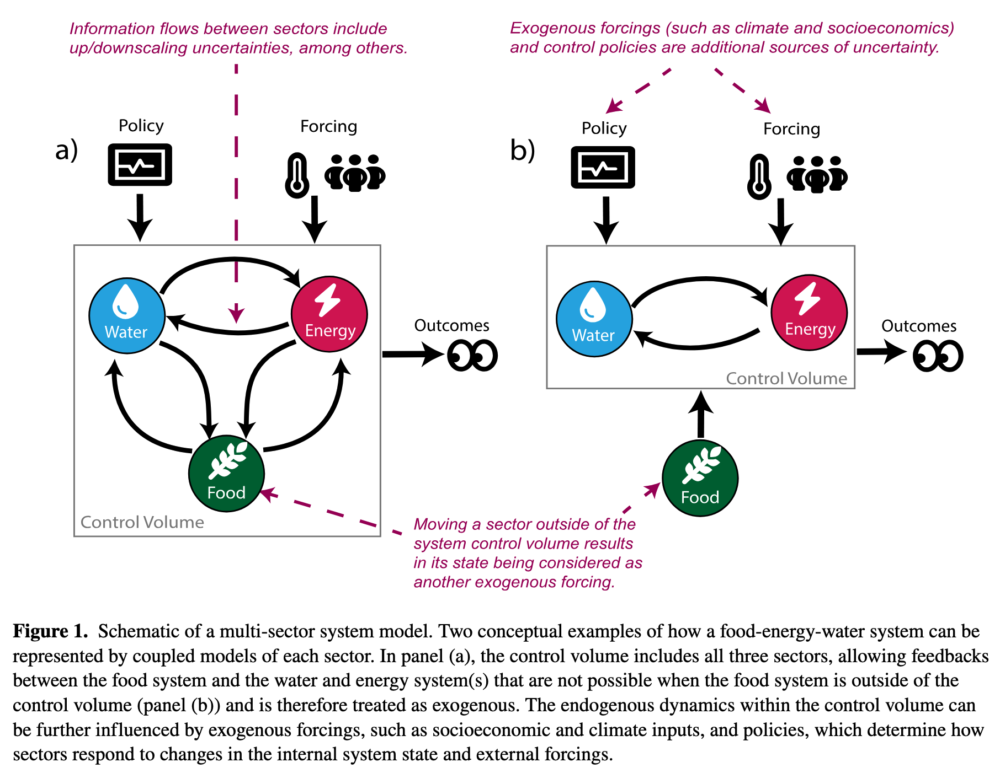

Lecture
Monday, March 23, 2026
So far you have three tools for analyzing decisions under uncertainty:
Today: which conditions in that ensemble actually drove failure?
Srikrishnan et al. (2022) distinguish three sources of uncertainty in coupled human-natural systems:
Parametric uncertainty: we know the model structure, but not the exact parameter values
Example: climate sensitivity, damage function coefficients
This is the target of Monte Carlo sampling and GSA (Weeks 4, 7).
Structural uncertainty: we don’t agree on which equations represent the system
Example: ice sheet dynamics, damage function form, discount rate model
Requires running multiple model structures — a multi-model ensemble.
Sampling uncertainty: finite samples from stochastic processes
Example: 30 years of storm surge records from a non-stationary climate
Addressable with more data or better sampling designs, but never fully eliminated.

Figure 1: Srikrishnan et al. (2022)
Today
Exploratory Modeling
Scenario Discovery
Bankes (1993) identifies two fundamentally different uses of simulation models:
Consolidative modeling
Examples: calibrated GCMs for physical climate projection, structural engineering load analysis, tidal prediction
Exploratory modeling
Examples: century-scale climate adaptation, integrated assessment of climate policy
The key criterion: can you validate the model? For decadal-to-century scale socio-environmental systems, the answer is usually no.
Think-Pair-Share (90 seconds)
Give two examples of problems where a consolidative model is appropriate, and one where it is not. What distinguishes them?
Running thousands of scenarios across uncertain parameters and policy choices:
\[(\mathbf{X}, \mathbf{L}) \xrightarrow{\mathbf{R}} \mathbf{M}\]
A large ensemble maps the outcome space: how metrics vary across the full space of assumptions and decisions.
Today
Exploratory Modeling
Scenario Discovery
Sometimes we want to find what breaks a single policy. Sometimes we want to compare which scenarios break different policies.
Three common approaches, each with different tradeoffs:
| Method | Strength | Weakness |
|---|---|---|
| Logistic regression | Familiar; interpretable coefficients; probabilistic output | Assumes linear decision boundary |
| CART | Visual; handles interactions; no linearity assumption | Can overfit; splits can be unstable |
| PRIM | Designed for scenario discovery; coverage/density tradeoff | Less familiar; requires tuning |
The right choice depends on the problem — interpretability often matters more than classification accuracy.
CART partitions the input space by recursive binary splits. At each node, find the variable \(X_k\) and threshold \(t\) that minimizes Gini impurity in the two resulting child nodes:
\[G_m = 2\, p_m\,(1 - p_m)\]
where \(p_m\) is the fraction of failures in node \(m\) (\(G_m = 0\) is pure; \(G_m = 0.5\) is maximally mixed).
\[\text{Best split: } \underset{X_k,\, t}{\arg\min}\; \frac{N_L}{N} G_L + \frac{N_R}{N} G_R\]
Why minimize Gini? Each split should make the children as pure as possible — nodes where almost all scenarios are failures, or almost none are.
A single CART tree is a deterministic partition: one tree, one set of rules.
A random forest builds hundreds of trees, each on a random subsample of the data and features, then averages their predictions.
Discussion
Why might a decision-maker prefer a single, less accurate tree over a more accurate but opaque ensemble?
Each leaf predicts the majority class — failure (\(y=1\)) if more than half its scenarios are failures.
Example: a two-level tree on SLR rate and flood damage might produce:
| Leaf | SLR (m/century) | Flood Damage ($B) | Majority |
|---|---|---|---|
| 1 | \(\leq 0.5\) | any | success |
| 2 | \(> 0.5\) | \(\leq 2\) | success |
| 3 | \(> 0.5\) | \(> 2\) | failure |
Result: interpretable “if/then” rules — but boundaries are fixed top-down, not iteratively refined.
Scenario
A city is evaluating a coastal sea wall sized for a 1-in-50-year storm surge, at a cost of $200M. Uncertain inputs: storm surge magnitude, sea level rise rate, future population exposure, discount rate, construction cost overrun.
Write (90 seconds)
In one sentence, define what “failure” means for this decision. Then write which two inputs you expect most drive failures and why.
Pair: Compare with your neighbor. Did you define failure the same way?
For scenario \(i\) with input vector \(\mathbf{z}_i\), model the log-odds of failure:
\[\log \frac{p_i}{1 - p_i} = b_0 + b_1 z_{i1} + b_2 z_{i2} + \cdots = \mathbf{b}^\top \mathbf{z}_i\]
Solving for \(p_i\) gives the sigmoid function:
\[p_i = \frac{1}{1 + e^{-\mathbf{b}^\top \mathbf{z}_i}}\]
\(p_i \in (0, 1)\) always. Classify as failure if \(p_i \geq 0.5\), which is equivalent to \(\mathbf{b}^\top \mathbf{z}_i \geq 0\).
The quantity \(\log \frac{p}{1-p}\) is the log-odds — the logarithm of the odds of failure. A fitted coefficient \(b_k\) tells you: a one-unit increase in \(X_k\) shifts the log-odds by \(b_k\).
The odds ratio \(e^{b_k}\) gives a multiplicative interpretation:
“A one-unit increase in \(X_k\) multiplies the odds of failure by \(e^{b_k}\).”
Example: if \(b_k = 0.7\), then \(e^{0.7} \approx 2\) — a unit increase in \(X_k\) doubles the odds of failure.
Rank inputs by \(|b_k|\) (after standardizing) to answer: which inputs most drive failure?
Lamontagne et al. (2019) ask: what abatement pathways lead to tolerable climate/economic futures, given deep uncertainty about human-Earth system (HES) dynamics?
Model: DICE integrated assessment model (climate + economy coupled)
Ensemble: 5,200,000 scenarios — 24 HES uncertain parameters + abatement growth rate (\(\alpha\))
Failure label: “intolerable” if warming \(> 2^\circ\)C in 2100, OR abatement cost \(> 3\%\) of GWP, OR climate damages \(> 2\%\) of GWP
Their methodology combines two tools you already know:
After labeling 5.2M runs as tolerable/intolerable, logistic regression on the dominant inputs shows:
The primary control on 2100 warming is the abatement growth rate — a societal choice, not an exogenous physical uncertainty.
Near-term warming is controlled by climate sensitivity (a physical parameter). Long-term warming is controlled by earlier abatement actions (a policy choice).
It is mostly a question of whether we choose to limit warming — not whether we can.
Wednesday we will dig into the figures: how the Sobol indices shift over time (Fig 2), and what the logistic regression contours look like (Fig 3).
PRIM finds a box in the input space that concentrates failures:
\[a_k \leq X_k \leq b_k \quad \text{for each input } k\]
Interpretation: “The strategy fails when SLR \(> 0.8\,\text{m}\) AND storm surge return period \(< 25\,\text{years}\)” is a PRIM box in two dimensions.
“Patient” refers to the algorithm: PRIM peels small slices from the box one at a time. Each peel removes the thinnest slice with the fewest failures.
For a box \(B\) over an ensemble with \(N\) total runs, \(N_f\) of which are failures:
\[\text{Coverage} = \frac{|\{\text{failures inside } B\}|}{N_f} \qquad \text{(recall)}\]
What fraction of all failures does the box capture?
\[\text{Density} = \frac{|\{\text{failures inside } B\}|}{|\{\text{scenarios inside } B\}|} \qquad \text{(precision)}\]
Of all scenarios in the box, what fraction are failures?
PRIM starts with the full input space and peels away small slices to increase density, recording coverage as it goes.
The output is a peeling trajectory: a set of nested boxes tracing the Pareto frontier in coverage–density space.
PRIM analysis of a 1-meter house elevation policy returns:
| Box | SLR Rate (m/century) | Storm Return Period | Coverage | Density |
|---|---|---|---|---|
| A | \(> 0.4\) | any | 94% | 31% |
| B | \(> 0.8\) | \(< 25\) yr | 71% | 82% |
| C | \(> 1.1\) | \(< 10\) yr | 34% | 96% |
Write (60 seconds)
In one sentence, interpret Box B. Then answer: if you are advising a city that faces severe storm surge risk and deep uncertainty in SLR, which box would you recommend and why?
In Lab 8 you’ll apply scenario discovery to a real flood protection problem from the Netherlands (Eijgenraam et al., 2014).
You know the Van Dantzig problem: how high should we build the dike? Eijgenraam extends it — investment costs grow exponentially with height, and flood risk grows over time with sea level rise and economic growth. (Rhodium example)
The decision: when to heighten the dike and by how much.
The annual flood probability at year \(t\) is:
\[P(t) = P_0 \exp\bigl(\alpha \eta\, t - \alpha\, H(t)\bigr)\]
This assumes an exponential distribution for water levels — analytically convenient, though real flood distributions have heavier tails.
Notice: \(\alpha\) appears twice — it makes risk grow faster (\(\alpha \eta t\)) and makes each cm of dike more effective (\(-\alpha H\)). Its effect on failure is non-monotonic.
| XLRM | Lab 8 |
|---|---|
| X (uncertainties) | \(P_0\), \(\alpha\), \(\eta\), \(V_0\), \(\delta\) |
| L (levers) | \((T_{\text{heighten}},\; \Delta H)\) — when to heighten, how much |
| R (model) | Eijgenraam cost-benefit model |
| M (metrics) | Max failure probability, total cost |
Your task: fix a policy, run 1,000 scenarios, label success/failure, and use PRIM to find which uncertainties drive failure.
The twist: changing how you define failure changes which uncertainties matter.
Wednesday: Figure discussion of Lamontagne et al. (2019)
Friday: Lab 8 — Scenario Discovery on the Eijgenraam dike model + Memo 1 due
Wednesday’s discussion: each person leads a 3-minute walkthrough of one figure from Lamontagne et al. (2019).
| Slot | Figure(s) | Focus |
|---|---|---|
| 1 | Fig 1a | Sampling the policy space |
| 2 | Fig 1b–d | Tradeoff clouds & “tolerable” windows |
| 3 | Fig 2a | Time-aggregated Sobol sensitivities |
| 4 | Fig 2b–d | Time-varying sensitivities |
| 5 | Fig 3a–b | Robust pathways at low climate sensitivity |
| 6 | Fig 3c + conclusion | Median sensitivity & headline message |
Sign up now!
James Doss-Gollin